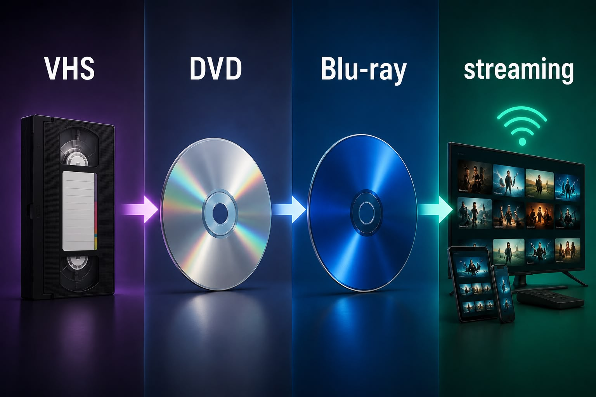
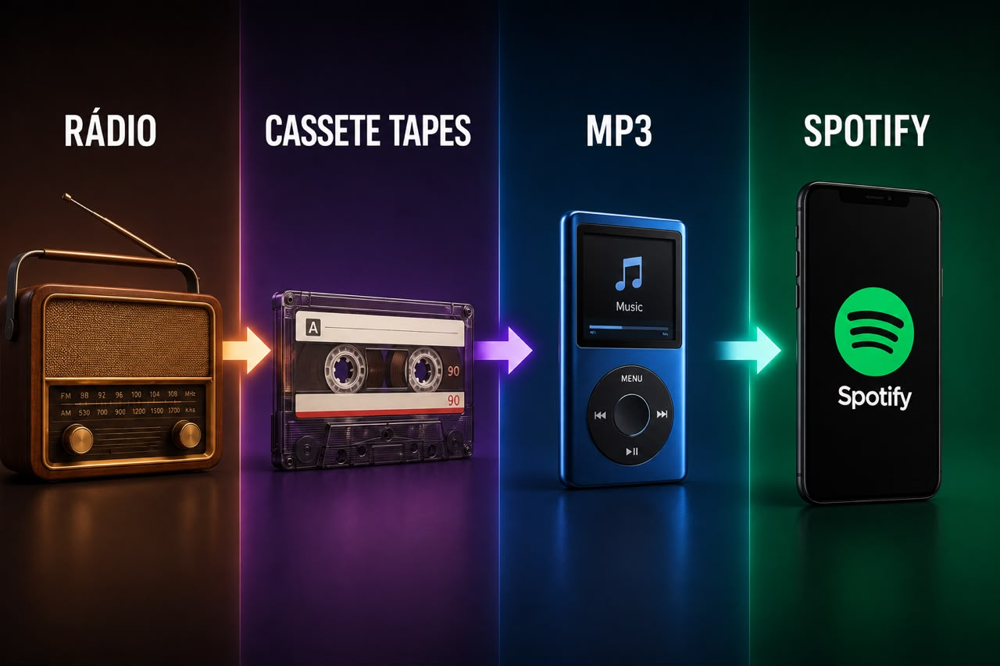

Over the past few decades, the way we consume media has changed beyond recognition. From rewinding VHS tapes to instant streaming, from tuning into radio stations to curating personal playlists on Spotify, and from waiting for the morning newspaper to scrolling through live social media feeds — every format we once relied on has been reimagined by digital technology. Even photography evolved from darkrooms and film rolls to smartphone snapshots and AI-generated imagery. This page takes you through those defining transitions, showing how each shift not only changed the technology, but transformed our relationship with media itself.
Topics covered on this page:
Home Video/Entertainment
VHS
DVD
Streaming
Audio/Music
Radio
MP3
Spotify
Information/News
Newspapers
Blogs
Social Media
Image/Photography
Analog Photography
Digital Photography
AI Images
The media format evolution timelines:
Evolution of Home Video/Entertainment:

From magnetic VHS tapes to instant online streaming — the evolution of home video entertainment.
VHS (1970s) → DVD (1990s) → Blu-ray (2000s) → Streaming (2010s)
Key milestones in home video:
VHS (1976) — First widely adopted home video format
Allowed recording and playback at home
Competed with Betamax in the format wars
DVD (1996) — Digital quality leap over VHS
Better image and audio quality
No rewinding required
Blu-ray (2006) — High-definition physical format
Up to 1080p resolution
Competed with HD DVD
Streaming (2010s)— The dominant format today
No physical media required
Platforms like Netflix, Disney+, and YouTube
VHS → DVD → Streaming
Evolution of home video/entertainment formats.
Characteristic
VHS
DVD
Streaming
Format
Physical tape
Optical disc
Digital / Online
Durability
Degrades over time
Resistant but can scratch
Does not degrade
Content Library
Limited titles
Wide selection in stores
Thousands of titles
Accessibility
Requires rewinding
Instant chapter access
Instant access anywhere
Video Quality
Low quality (240p)
Standard definition (480p)
Up to 4K HDR
Audio Quality
Mono / basic stereo
Dolby Digital surround
Dolby Atmos / lossless
Device Required
VHS player
DVD player
Any internet device
Cost
Buy or rent tape
Buy or rent disc
Monthly subscription
DVD was the transitional format between VHS and Streaming.
Evolution of Audio/Music:

From analog radio broadcasts to AI-curated playlists on Spotify — a century of audio evolution.
Radio (1920s) → Cassette Tapes (1960s) → CD (1980s) → MP3 (1990s) → Streaming (2000s)
Key milestones in audio:
Radio (1920s) — The first mass media broadcast
Reached millions of listeners simultaneously
No user control over content
Cassette Tapes (1960s) — First portable audio format
Allowed users to record their own mixes
Popularized the mixtape culture
MP3 (1990s) — Digital compression changed everything
Made music files small enough to share online
Led to the rise of file sharing platforms
Spotify (2008) — The streaming era begins
Millions of songs available instantly
AI-powered personalized recommendations
Radio → MP3 → Spotify
Evolution of audio/music consumption formats.
Characteristic
Radio
MP3
Spotify
Format
Broadcast / Analog
Compressed digital file
Digital / Streaming
User Control
No control over songs
Full control over files
Full control / playlists
Availability
Live / real-time only
Stored locally, anytime
On-demand, 24/7
Reach
Limited to broadcast range
Shareable worldwide
Global access
Personalization
No personalization
Manual selection only
AI-curated recommendations
Audio Quality
Varies by signal
Compressed (lossy)
High quality / lossless
Cost
Free (ad-supported)
Buy or download files
Free or subscription
Device Required
Radio receiver
MP3 player / computer
Any internet device
MP3 was the bridge that made music portable before streaming took over.
Evolution of Image/Photography:
From chemical darkrooms to AI-generated imagery — the transformation of photography across three eras.
Analog Photography (1900s) → Digital Photography (1990s) → AI Images (2010s)
Key milestones in photography:
Analog Photography (1900s) — Capturing the world on film
Required chemical darkroom processing
Limited number of shots per roll
Digital Photography (1990s) — Instant capture and storage
No film or darkroom required
Democratized photography for everyday users
AI Images (2020s) — Images generated from text
Tools like DALL-E, Midjourney, and Stable Diffusion
Raises questions about authenticity and copyright
Analog Photography → Digital Photography → AI Images
Evolution of image and photography formats.
Characteristic
Analog Photography
Digital Photography
AI Images
Format
Film / Chemical process
Digital sensor / file
AI-generated / Digital
Quantity
Limited shots per roll
Thousands per memory card
Unlimited generation
Processing
Requires darkroom
Instant preview and edit
Instant generation
Reality
Captures real moments
Captures real moments
Can be entirely fictional
Cost
High cost per photo
Low cost per photo
Nearly free
Editing
Manual darkroom techniques
Software (Photoshop, Lightroom)
Prompt-based refinement
Skill Required
High — technical and artistic
Moderate — camera knowledge
Low — text prompt only
Device Required
Film camera + darkroom
Digital camera / smartphone
Any internet device
Digital photography democratized image-making before AI began generating images from text.
Digital Media Transformation
VHS, DVD and Streaming Comparison
Home video changed from physical formats to online platforms. VHS allowed
families to watch and record content at home, but it had low image quality
and tapes could degrade. DVD improved video and audio quality and made
navigation easier through menus. Streaming changed the model again by
giving users instant access to large content libraries without physical media.
Format
Period
Main Feature
Limitation
VHS
1970s-1990s
Home recording and playback
Low quality and tape degradation
DVD
1990s-2000s
Digital image and sound quality
Still required a physical disc
Streaming
2010s-present
Instant online access
Depends on internet connection and subscriptions
Streaming services currently dominate multimedia consumption.
Radio to Spotify Evolution
Radio was one of the first ways to distribute audio content to a mass
audience. However, listeners had little control over what they heard.
Spotify represents a different model: music is available on demand,
playlists are personalized, and recommendation systems help users
discover new artists.
Radio
Live broadcasting
Same content for all listeners
MP3
Portable digital music files
Easy sharing and storage
Spotify
On-demand music streaming
Personalized playlists and recommendations
Photography Evolution
Photography evolved from analog film to digital files and, more recently,
to AI-generated images. Analog photography required film rolls and
chemical development. Digital photography made photos easier to store,
edit and share. AI image generation introduced a new stage where images
can be created from text prompts without using a camera.
Analog photography
Uses film rolls
Requires chemical development
Digital photography
Stores images as digital files
Allows easy editing and sharing
AI-generated images
Creates images from text prompts
Raises questions about authenticity and copyright
Key Terms
Streaming
Online delivery of audio or video content without needing a physical format.
On-demand media
Media that users can access whenever they choose instead of following a fixed schedule.
Digital photography
Photography that stores images as digital files instead of using film.
AI-generated image
An image created by artificial intelligence based on data, patterns or text prompts.
These comparisons show that digital media did not only improve quality.
It also changed how users access, choose and interact with content.
The biggest transformation is the move from ownership
to instant access.